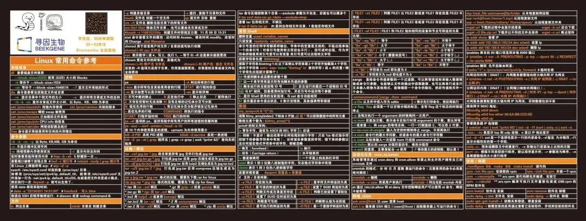
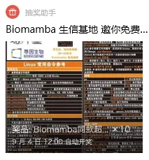

五万粉啦，送一波超大的Biomamba鼠标垫
原文：https://mp.weixin.qq.com/s?__biz=MzAwMzIzOTk5OQ==&mid=2247521002&idx=1&sn=83502320843f6d02b43d4e02d70087f1&chksm=9b3cebbaac4b62ac7d18979f071dfee0e74b72a1335b5f909f7b5ed07fe07d41e5969f5a3f7b#rd 合集：送周边

超大鼠标垫周边


不知不觉我的小破号已经五万粉 啦，我们的Linux课程(十小时学会Linux)已经更完啦，不知道大家掌握的怎么样呢。考虑到可能有些小伙伴跟我一样记不住命令，给大家做了二十个 超大(80cm X 30cm)的Linux命令鼠标垫。参与方式很简单，转发此条推送至朋友圈，30赞，截图发给客服微信[Biomamba_yunying]，前十名人手一个 ，剩下的十个名额凭截图于客服处领取抽奖小程序码随机抽取 。
赠品预览：

感谢寻因生物的赞助，左上角我们调整了一下logo 9月4号12:00前 停止发放抽奖码并准时开奖：
9月4号12:00前 停止发放抽奖码并准时开奖：



光明正大的95折~


另外，活动期间(下单时间需要在推送发布后，09月4日12:00之前)，以下内容也是95折：
共享(经济实惠)：有root权限的共享服务器,报我名字立减200￥独享(省电省心)：生信分析不求人
实体(稳定高效)：配置一个心仪的工作站(硬件+环境配置)
访问链接：https://biomamba.xiyoucloud.net/
更多内容可咨询客服微信[Biomamba_yunying]
我们也有一些订阅资料， 有需要的同学可以加客服微信优惠订阅~龙年订阅须知
单细胞Figure 1常见图表
快速上手Seurat V5
机器学习基础手册
scRNA-Seq学习手册Seurat V4修订版
Bulk RNASeq| 转录组实战scRNA-Seq双细胞过滤手册
CellChat空转细胞通讯合辑
scRNA-Seq学习手册Seurat V5更新版SCENIC转录因子调控网络图
2022资料合辑(重置链接)
scRNA-Seq学习手册2023_R语言版一文搞定拟时序分析的下游可视化探索
Seurat中如何让细胞听你指挥
《拟时序分析》3.monocle2实操：完整版
一文搞定单细胞基因集评分
改造单细胞降维图| 2.ggplot2中的DIY
改造单细胞降维图| 3.3D降维图与动图绘制
一文搞定单细胞/空间转录组的WGCNA分析
SCENIC单细胞转录因子预测|2.学习手册生信Python速查手册
单细胞复写|3.急性心肌梗塞(AMI)外周血scRNA-Seq分析实战
SCENIC单细胞转录因子预测|4.精简版流程
《细胞通讯》2.CellChat基础分析教程
《细胞通讯》2.2CellChat多组别分析
《细胞通讯》CellChat学习手册
《拟时序分析》3.monocle2实操：完整版
ComplexHeatmap学习手册沉浸式统计细胞比例VlnPlot的ggplot改造
scRNA-Seq学习手册Python版
空间转录组学习手册合辑
Seurat空间转录组学习手册
Scanpy空间转录组学习手册
Stereopy空间转录组学习手册Squidpy空间转录组学习手册
影像组学学习手册
R语言基础学习手册
一文搞定空间转录组与单细胞测序的整合分析
基于深度学习的图像分类任务 以上活动均在9月4号12:00截止
以上活动均在9月4号12:00截止

如何联系我们

 公众号后台消息回复不便，这里给大家留一下领取资料及免费服务器(足够支持你完成硕博生涯的生信环境)的微信号 ，方便各位随时交流、提建议（别问在么，添加时直接说来意）。此外呼声一直很高的交流群 也建好了，欢迎大家入群讨论：
公众号后台消息回复不便，这里给大家留一下领取资料及免费服务器(足够支持你完成硕博生涯的生信环境)的微信号 ，方便各位随时交流、提建议（别问在么，添加时直接说来意）。此外呼声一直很高的交流群 也建好了，欢迎大家入群讨论：
大家可以阅读完这几篇之后添加给生信入门初学者的小贴士 如何搜索公众号过往发布内容

 您点的每个赞和在看，我都认真当成了喜欢
您点的每个赞和在看，我都认真当成了喜欢